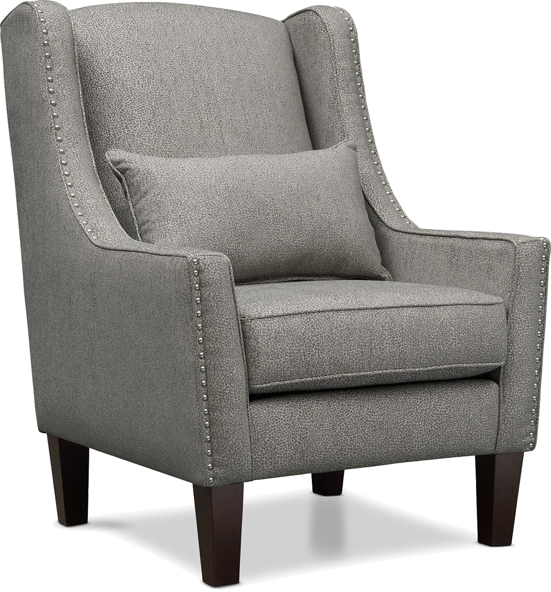

نیارا
صندلی راحتی
تومان
چند نکته در مورد این محصول رو میگم که امیدوارم به دوستان در انتخاب صندلی برای منزل یا هرجای دیگه کمک کرده باهشم. 1. چرم مصنوعی باکیفیت و قابل شستشو ( منظورم از شستسشو این هست که خیلی راحت میتونید با رایت یا شوینده های دیگه لکه ها و هرچیز دیگه رو از روی این محصول پاک کنید. 2. پایه چوبی رنگ شده که باز هم باعت میشه راحت بتونید پایه ها رو تمیز کنید و در اثر رطوبت به چوب آسیبی وارد نشه.
(4.67 - 172 بازخورد)
کیفیت 1